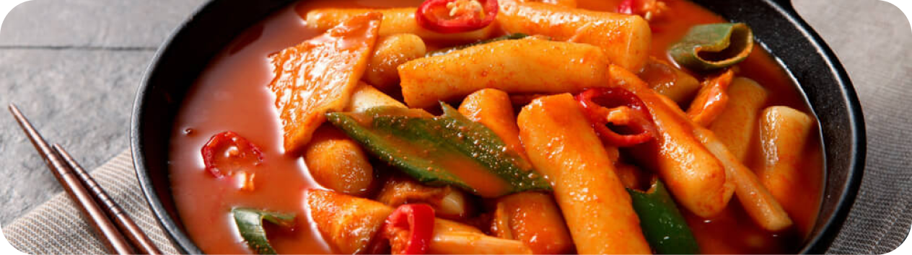

KOREAN
Spicy Rice Cake (Tteokbokki)

- 2 cup tepung beras
- 1/2 sendok teh garam
- Air hangat secukupnya
- 1 sendok teh minyak wijen
- 4 ons kubis hijau
- 1 lembar oden (fish cake)
- 1-2 daun bawang
- 3 cup kaldu ikan teri
- 3 sdm gochujang
- 1-3 sendok teh bubuk cabe
- 1 sdm kecap manis
- 2 sdm gula pasir
- 1 sdm sirup jagung
- 1 sdm bawang putih halus
- Campurkan tepung beras, garam, air hangat, dan minyak wijen. Aduk hingga adonan terasa kalis
- Lalu tutupi dengan menggunakan plastik, biarkan terbuka sedikit. Lalu microwave selama 2 menit.
- Keluarkan adonan dan aduk sebentar menggunakan sendok kayu.
- Kemudian, masukkan lagi ke microwave selama 2 menit.
- Oleskan setengah minyak wijen di atas talenan atau alas lainnya yang digunakan untuk membentuk adonan.
- Letakkan adonan kue beras lalu tepuk-tepuk dengan menggunakan palu masak atau rolling pin selama lima menit hingga teksturnya terlihat halus dan elastis.
- Lalu bentuk adonan memanjang dan lurus.
- Potong-potong garaetteok sesuai selera. Siapkan pula bahan pelengkapnya.
- Lalu rebus kaldu ikan teri dan masukkan semua bahan saus. Aduk merata hingga kuahnya mendidih.
- Lalu masukkan garaetteok dan masak hingga terasa lembut selama kurang lebih delapan sampai 10 menit. Aduk secara berkala agar kue beras tidak lengket di panci.
- Lalu tambahkan kubis, daun bawang, dan oden. Masak kembali hingga mendidih selama empat sampai enam menit.
- Cicipi sesekali dan jika sudah sesuai selera matikan api.
- Sajikan.